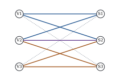

17.4 Empty cells and estimability
Some combinations of levels are never observed, or are impossible. An empty cell’s mean does not appear in the distribution of the data, so no unconstrained analysis can estimate it (Proposition 17.1.1(b)). This section works out what survives, building on connectedness (Theorem 8.6.1) and the estimability of interaction contrasts (Proposition 8.6.2).
Throughout, the two-way layout has occupied cells
17.4.1. What remains estimable
In the two-way layout described above:
(a) In the cell-means model,
(b) The estimable interaction contrasts, the tables
(c) If the design is connected, the additive model estimates every cell mean, including those of empty cells, and under additivity
(d) Code both factors by contrasts and form the interaction columns as products. If at least one row is incomplete and
Proof.
(a) The coefficient of
(b) Let
(c) The first claim is Theorem 8.6.1(c). For the second, let
(d) As in the proof of Proposition 17.2.3, the full model matrix is
In part (b), a table with zero row and column sums on
the edges of the design graph is a circulation.
The simplest ones run around cycles with alternating
signs. A four-cycle is the familiar tetrad
Part (d) is the result to remember about Type III. With empty cells it ignores every incomplete row, and it may test nothing at all: an empty cell can hold whatever value makes its row’s unweighted mean agree, and such means are not estimable, by (a).
17.4.2. An example with two combinations never grown
Suppose that in the trial of Example (Three varieties at three sites)
V1 had never been grown at S3, nor V3 at S1. That leaves
The unweighted means of V1 and V3 are no longer
estimable. V1 and V2 share S1 and S2, and the difference
of their averages there is
The “Type III” sum of squares for varieties is

import numpy as np
import pandas as pd
counts = np.array([[7, 4, 2], # rows: varieties V1-V3; columns: sites S1-S3
[3, 5, 4],
[2, 3, 7]])
true_means = np.array([[5.8, 7.2, 7.6],
[5.0, 6.5, 7.5],
[4.4, 5.9, 7.2]])
rng = np.random.default_rng(20172)
rows = [(f"V{i + 1}", f"S{j + 1}", round(true_means[i, j] + rng.normal(0, 0.5), 1))
for i in range(3) for j in range(3) for _ in range(counts[i, j])]
trial = pd.DataFrame(rows, columns=["variety", "site", "y"])
def proj(*blocks):
"""Orthogonal projection onto the span of the given column blocks (any rank)."""
Z = np.column_stack(blocks)
U, s, _ = np.linalg.svd(Z, full_matrices=False)
U = U[:, s > 1e-10 * s[0]]
return U @ U.T
def rank(*blocks):
return np.linalg.matrix_rank(np.column_stack(blocks))
missing = ((trial["variety"] == "V1") & (trial["site"] == "S3")) | \
((trial["variety"] == "V3") & (trial["site"] == "S1"))
sub = trial[~missing].reset_index(drop=True) # V1 never grown at S3, V3 never at S1
y = sub["y"].to_numpy()
n = len(y)
one = np.ones((n, 1))
ZA = pd.get_dummies(sub["variety"]).to_numpy(float)
ZB = pd.get_dummies(sub["site"]).to_numpy(float)
W = np.column_stack([ZA[:, [i]] * ZB for i in range(3)])
m = rank(W) # occupied cells
M, PAB, PA, PB = proj(W), proj(one, ZA, ZB), proj(one, ZA), proj(one, ZB)
sse = y @ (np.eye(n) - M) @ y
df_inter = m - rank(one, ZA, ZB) # m - a - b + 1 for a connected design
ss_inter = y @ (M - PAB) @ y
F_inter = ss_inter / df_inter / (sse / (n - m))
print(f"occupied cells {m}, interaction df {df_inter}, SS {ss_inter:.3f}, F {F_inter:.2f}")
ss_typeII_A = y @ (PAB - PB) @ y # well defined, a - 1 = 2 dfdef sum_coding(labels):
D = pd.get_dummies(labels).to_numpy(float)
return D[:, :-1] - D[:, [-1]]
CA, CB = sum_coding(sub["variety"]), sum_coding(sub["site"])
CAB = np.column_stack([CA[:, [i]] * CB for i in range(2)])
df_III_A = m - rank(one, CB, CAB)
ss_III_A = y @ (M - proj(one, CB, CAB)) @ y
print(f"last-in SS for variety with sum coding: {abs(ss_III_A):.3f} on {df_III_A} df")17.4.3. How software behaves
A program fitting the rank-deficient effects model
picks one coefficient vector and computes its sums of
squares from it. The script fits the data of Example (The variety trial with two empty cells)
with statsmodels 0.15 under three namings of the levels.
It warns that the design is rank-deficient and prints
tables anyway. The Type I interaction appears on
17.4.4. Recommended practice
Tabulate the counts first, draw the design graph and count its components. Rows in different components cannot be compared, even under additivity (Theorem 8.6.1(b)).
Ask why the cells are empty. Cells lost at random fit the theory above. Impossible combinations have no mean, and a main effect averaged over them is fiction. Combinations avoided because they were expected to do badly bias every additive fill-in, and no analysis of the observed cells can detect it.
Test the interaction on its
If additivity is credible, use the additive model and
If not, ask estimable questions of the cell means: simple effects, comparisons over shared columns, or a complete sub-table, and state which cells each comparison uses. Do not report a Type III or Type IV table without identifying its hypotheses.
One can also impose just enough interaction constraints to identify the empty cells (Section 17.3). The resulting estimates are then set by constraints the data cannot test (Exercise (B4)), and should be presented as assumptions.
17.4.5. Exercises
A. Check your understanding
A
B. Practice
In a
Solution. With three occupied cells
and a connected graph, the additive model has
Take the
In Example (The variety trial with two empty cells),
show that the six-cell contrast
Solution. Row sums:
In a
Solution. The constraint gives
C. Going deeper
Let
Solution. Adding an edge
In the trial with only V1 at S3 removed, what does the “Type III” sum of squares for sites test, and on how many degrees of freedom? Verify your answer by modifying the listing.